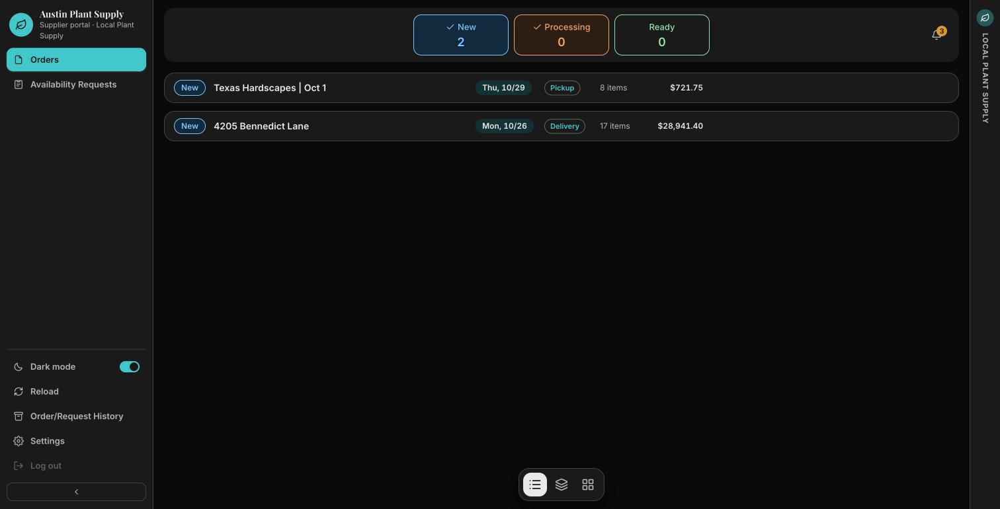

Supplier portal and public links
Suppliers answer Local Plant Supply's availability questions and confirm its orders in one of two ways. LPS Partners sign in to their own company portal. Every other supplier gets a single private web link by email. Either way, the supplier answers line by line and presses Submit, and Rosie, LPS's sales and orders agent, is notified of the submission right away.
In short
Local Plant Supply (LPS) needs to know whether a supplier actually has the plants for a customer's job, because a price list only shows what is usually stocked. To find out, LPS sends that supplier an availability request (an "AR"). An AR lists the plants, sizes and quantities for one job. Once the customer commits, LPS also sends that supplier an order. The supplier-facing side of the app exists so that suppliers can answer both quickly, without phone calls or spreadsheets.
LPS Partners: the portal
A supplier company with at least one login. They sign in at /login and land on their own portal under /partner/<id>. There they see every request and order LPS has sent them, answer and submit, confirm orders and chat with LPS.
Everyone else: a public link
A supplier without a login gets an email from Rosie with a link to one request. The link looks like /public/availability/<random code>. Anyone who holds the link can answer and submit that one request, and nothing else. No account is needed.
What a supplier can do:
- Answer each plant line. The answers are Available, Partial Qty, Unavailable, Diff Sz/Sub (a substitute), Can Order, Arriving Soon, or leave it Pending. Each line can also take an available quantity, a price and a note.
- Submit. Each answer or cell is saved as soon as the supplier changes it, but LPS only treats the answers as final once the supplier presses Submit availability. Submitting notifies Rosie on the job's conversation thread.
- Confirm and complete orders (portal only). Acknowledge Received moves the order to Processing, with nothing to fill in. Mark as Ready moves it to Order Ready. The target date and pickup/delivery come from the job.
- Chat with Local Plant Supply (portal only), with files and voice notes.
Sources: app/app/partner/[id]/page.tsx, app/components/workspace/availability-request-view.tsx, app/lib/partner-auth.ts, docs/app/README.md (Supplier portal, Public availability requests)
Accounts and first sign-in
Suppliers cannot sign themselves up. An LPS admin creates portal logins on the supplier's profile page, in the Portal access tab (/suppliers/<id>?tab=access). That tab is the only place where logins are created, reset or deleted.
- Admin adds a login. In Add an account, the admin types a username. It is pre-filled with the supplier's primary contact email, and the help text reads "What they type to sign in. An email is fine; it is never written to." Then the admin presses Create login. A company can have several logins, for example an owner and a yard manager answering the same requests.
- The app generates a password and shows it once. A box reads "Save these now — the password cannot be shown again." It lists the portal URL, the username and the password. Copy message copies a ready-made hand-over text, and Copy link copies just the portal URL.
- The admin sends the details to the supplier by their usual channel.
- The supplier signs in at
/loginwith that username and password. - The supplier must choose their own password. Until they do, the only page they can open is Choose a password (
/change-password), which reads "You signed in with a password we generated for you. Replace it with one only you know to carry on." The new password must be at least 10 characters and different from the current one. Save and continue takes them into their portal.
After that, the password belongs to the supplier, and LPS cannot read it. The supplier can change it again from the portal's Settings page. If they forget it, an admin presses Reset password on that login. This generates a new one-time password, shown once in the same way, and the supplier must again choose their own at the next sign-in. Delete (the trash button, "Delete this login") removes a login for good after a confirmation. It also frees the username.
How accounts are stored and checked
- Where passwords live. Passwords are held by Supabase Auth, and the app stores only an
app_usersrow:id,username,role(adminorpartner),supplier_idandmust_change_password. A partner row must have asupplier_id, and an admin row must not. - Usernames. Usernames are stored lower-cased, and a unique index on
lower(username)keeps them unique across the app. Supabase Auth needs an email address. A username that is already an email address is used as it is. Any other username becomes<username>@AUTH_EMAIL_DOMAIN, which defaults to a reserved.invaliddomain where no mailbox exists. Accounts are created already confirmed, so Supabase sends no confirmation mail, and the app never mails that address. - Admin API:
/api/suppliers/[id]/partner-account. Every handler re-checksrole === 'admin'itself, even though the gate already keeps partners out.- GET lists the accounts.
- POST
{username}creates one. - PATCH
{accountId}resets a password. - DELETE
{accountId}deletes a login. - Reset and delete are scoped to the company the page belongs to, so one supplier's page cannot touch another company's login.
- Generated passwords are 16 characters in four groups. They avoid look-alike characters (no 0/o/1/l/i). Creating or resetting one sets
must_change_password = true. - Sign-in. POST
/api/auth/login{username, password}. A wrong username and a wrong password both get the same401("invalid username or password"), so nobody can find out which usernames exist. - Forced change. At sign-in the flag goes into the session cookie, and the gate then sends every page to
/change-passworduntil it is cleared. POST/api/auth/passwordchecks the current password, sets the new one, clears the flag and re-issues the session cookie. It works for either role. - The LPS Partner flag.
suppliers.is_lps_partneris maintained by a database trigger from the existing logins. It is excluded from the app's writable columns.
Sources: app/components/workspace/partner-access.tsx, app/app/api/suppliers/[id]/partner-account/route.ts, app/lib/auth.ts, app/app/api/auth/login/route.ts, app/app/change-password/page.tsx, app/components/change-password-form.tsx, app/app/api/auth/password/route.ts, docs/supabase-schema.md (app_users)
Sources: app/components/workspace/partner-access.tsx, app/app/login/page.tsx, app/app/change-password/page.tsx, docs/app/README.md (Portal access)
One login per company, across its branches
Many suppliers have several sites (farms or yards). In the catalogue, each site is its own supplier row, and every row points at the company's head branch. A single-site supplier is its own head branch.
- Logins belong to the company, never to one farm. Opening Portal access from any branch page shows and edits the head branch's logins. The portal URL handed to the supplier is the head branch's portal.
- Sign-in lands on the head branch. A partner who signs in is sent to
/partner/<head branch id>. - The company answers on one portal. The LPS Partner flag lives on the head branch alone. That is also the row LPS picks when sending a request, so a company's requests and orders come together in one place rather than one portal per farm.
- Other companies are invisible. If a partner changes the number in the URL to another company's id, the app answers "not found". It does not say "forbidden", so a partner cannot even tell whether another supplier exists.
How company scoping is decided
canAccessSupplier(user, supplierId) in app/lib/auth.ts decides who may open a portal id:
- Admin: always allowed.
- Partner: the login's
supplierIdis the company's head branch id. Access is allowed when the requested id equals it, or when the requested supplier is active and itshead_branch_idequals it.head_branch_idis never null and never chains, so one lookup is enough.
On top of that, most portal routes call partnerSupplier(id). It requires that exact supplier row to exist, to be active and to be flagged is_lps_partner, and answers 404 otherwise. Because the flag is on the head branch, the head branch's portal is the one that opens.
Sources: app/lib/auth.ts (partnerScopeId, canAccessSupplier), app/lib/partner-auth.ts, app/lib/availability-queries.ts (partnerSupplier)
Sources: app/lib/partner-auth.ts, app/components/workspace/partner-access.tsx, docs/app/README.md (Portal access, Companies and farms)
The portal at a glance
The portal uses the same look and building blocks as the LPS team's app, with fewer destinations.
- Desktop: a left rail. It shows the supplier's name and "Supplier portal · Local Plant Supply" at the top, then Orders and Availability Requests. At the foot are Order/Request History, Settings and Log out.
- Phones: a bottom bar with Alerts on the left, the destinations in the middle and Chat on the right.
| Page | Address | What it is for |
|---|---|---|
| Availability Requests (home) | /partner/<id> | Every open request, in work buckets, with three views: By request, By item and By status. |
| A request | /partner/<id>/requests/<arId> | One request on its own page. The supplier answers it line by line and submits it here. Also has Share and Print. |
| Orders | /partner/<id>/orders | Open orders, with New, Processing and Ready filters. |
| An order | /partner/<id>/orders/<orderId> | One order: acknowledge it, mark it ready, change row status and write the supplier's own notes. Prices are read-only. |
| Order/Request History: Orders | /partner/<id>/closed-orders | Closed orders, read-only. This is where the rail's history link goes. |
| Order/Request History: Requests | /partner/<id>/closed | Closed requests, read-only. Reached from the history page's Requests tab. |
| Settings | /partner/<id>/settings | "Signed in as …" and the change-password form. This is the only setting a supplier owns. |
The bell (Alerts) lists:
- every request still at New, as "New availability request — needs your answer.";
- an unread reply from Local Plant Supply in the chat.
Each alert clears when the supplier acts on it, and there is no "mark all read".
Pages refresh themselves. When LPS or Rosie changes something, open portal pages reload their data without the supplier pressing anything. Phones also support pull-to-refresh.
Portal chrome and live updates
- Chrome.
PartnerFrame(app/components/workspace/partner.tsx) renders the sameWorkspaceFrameas the adminShell. Portal tabs:requests,orders,closed,closed-ordersandsettings. On mobile the page header is always hidden. - Data loading. The portal pages render client-side and load supplier data only through the gated
/api/partner/:id/*routes. Settings also reads/api/auth/mefor the signed-in username. - Live updates.
usePartnerUpdates(supplierId, refresh)subscribes to the server-sent-events stream/api/partner/:id/events. That stream sends data-free{"type":"jobs"}signals whenever rows change injob_requests,job_request_items,availability_requests,candidates,orders,order_items,customersorsuppliers. On each signal the page re-reads its own scoped APIs. It also refreshes on reconnect, when the tab becomes visible or regains focus, when the device comes back online, and on a 60-second fallback poll. - Hidden references. Request names, line text and chat text shown to suppliers pass through
redactPartnerRequestRefs(app/lib/partner-display.ts), which replaces internalAR-<number>references with "availability request". The printed request sheet is the one exception: it carries the request number, so a filled-in paper sheet can be matched when it comes back.
Sources: app/components/workspace/partner.tsx, app/components/workspace/frame.tsx, app/lib/use-partner-updates.ts, app/lib/use-job-updates.ts, app/lib/job-events.ts, app/lib/partner-display.ts
Sources: app/app/partner/[id]/**/page.tsx, app/components/workspace/partner.tsx, app/components/workspace/partner-history-tabs.tsx
Availability requests: work buckets and views
The home page lists the supplier's open requests. Drafts LPS is still preparing never appear, and closed requests live on the history page. Each request is a one-row card that opens its own page. The card shows the status, the request name, the expected delivery/installation date, Pickup or Delivery, the item count and the total, in the same layout as the supplier's order cards.
Work buckets
In the By request view, three buckets can each be switched on or off:
| Bucket | Stored status | Meaning for the supplier |
|---|---|---|
| New | new | Waiting on you. A request you already worked on goes back to New only when LPS reopens it. |
| Processing | processing | You have saved at least one answer but not submitted yet. |
| Completed | submitted | You pressed Submit. LPS has your answers. |
Every visit starts with New + Processing selected, which is the active work queue. Turn on Completed to see what you have already submitted. There is no "All" button: selecting all three shows every open request. The bucket counts always show the totals, whichever buckets are selected.
![Supplier portal Availability Requests page for Austin Plant Supply. Across the top are three bucket buttons: New 3 and Processing 1, both ticked, and Completed 3, not ticked. Below are four request cards, each with a status badge (three New, one Processing), the request name, an expected date, a Pickup or Delivery tag, an item count and a total. The left rail lists Orders and Availability Requests, with Order/Request History, Settings and Log out at the foot. A three-icon view switcher sits at the bottom centre.](screenshots/portal-requests.jpg)
/partner/<id>, opened in its default New + Processing state. Completed still shows its count of 3 even though its requests are hidden. The floating switcher at the bottom changes between the three views described next.Three views of the same work
A switch floating at the bottom centre of the page changes the view:
- By request: one card per request, which is "what does this job need?".
- By item: one group per plant, across every open request that asks for it, which is "how much of this plant am I being asked for?". Tabs filter by answer: All, Available, Partial Qty, Unavailable, Diff Sz/Sub, Can Order, Arriving Soon and Pending, each with a count. Lines can be answered directly from this view. A supplier can also link a line to one of their own catalogue rows, so that lines for the same plant group together.
- By status: the same lines as a board, one card per answer.
Where the home page's data comes from
- GET
/api/partner/:idreturns{ supplier: {id, name}, requests: ARDetail[] }.- It includes every non-draft request for that supplier, newest first, up to 500.
- The home page drops
closedones on the client. - The request page and the bell use this same payload.
- GET
/api/partner/:id/itemsfeeds By item and By status.- It returns lines from requests that are neither closed nor draft.
- Each line carries its request id, status and name, plus the catalogue row it is mapped to.
- It is loaded only once one of those two views is opened.
- Customer details appear only when the request has
share_customer_detailsset and belongs to exactly one job. The home payload then carries the customer contact and delivery address. The items payload carries only the customer's company or name. - Substitute rows created by a Diff Sz/Sub answer are hidden from all request views and line counts (
withoutSubstituteRows). - Catalogue mapping is PATCH
/api/partner/:id/requests/:arIdwith{itemId, mappedInventoryId}.- The catalogue row must be active and belong to the same company.
- Mapping goes through
setARItemMapping, not the answer function, so it is never counted as an answer. It writes the line directly and leaves the request's status and submitted date as they are. (The old line-change triggerprocess_availability_answer, which reset a request to New on any direct line change, was dropped in migration 0130.)
Sources: app/app/partner/[id]/page.tsx, app/components/workspace/partner-request-buckets.tsx, app/components/workspace/supplier-items.tsx, app/components/workspace/supplier-status-board.tsx, app/components/workspace/partner-request-card-layout.tsx, app/lib/availability-queries.ts (listPortalRequests, listPortalItemLines, setARItemMapping), harness/agents/daisy/migrations/0130_job_lines_from_selected_candidate.sql
Sources: app/app/partner/[id]/page.tsx, app/lib/availability.ts, docs/app/README.md (Supplier portal, By item, By status)
Answering a request line by line
A request page has these parts, from top to bottom:
- Header card: the job's name, the request's status, each job's expected delivery/installation date with pickup or delivery, and the customer's contact and delivery address (only if LPS shared them) along with LPS's note.
- Summary strip: a count of lines per answer, plus a subtotal.
- Line table with the columns Need, Avail qty, Size, Plant, Status, Note, Unit price and Line total.
- Note for this request box.
- Submit bar.
![A supplier portal request page. The toolbar shows a back button, '7 lines · 0 pending', Share, Print and the bell. The header card shows the request name 'Texas Hardscapes | Oct 1', a Processing status, a Pickup tag and the date Thu, 10/29, with the delivery address marked Not provided. A summary strip counts 7 Total items, all 7 Available and 0 in every other answer, with a subtotal of $471.75. The line table has columns Need, Avail qty, Size, Plant, Status, Note, Unit price and Line total; each visible line has an Available status picker and either a supplier note or 'Add note…'. A wide Submit availability button is fixed at the bottom.](screenshots/portal-request.jpg)
/partner/<id>/requests/<arId> that the supplier has started answering, so it reads Processing. The summary strip counts lines by answer (here all seven are Available), and each line's Status picker, note and unit price are edited in place above the Submit availability bar.The toolbar adds a back button (an arrow icon named "Back to availability requests", or "Back to closed requests" on a closed request), a count of lines and pending lines, Share, Print and the bell.
Each line is answered with its Status picker. Some answers save immediately. Others open a short dialog first:
| Picker option | What happens | Stored as |
|---|---|---|
| Available | Saves at once, with no dialog. The available quantity becomes the full quantity asked for ("all of it, as asked"). | available |
| Unavailable | Opens the same substitute dialog as Diff Sz/Sub. Its red No Sub button saves a plain Unavailable: quantity 0, the price kept, any earlier substitute cleared, and the line's note left as it is. Or the supplier can offer a substitute there. | unavailable |
| Diff Sz/Sub | Opens the substitute dialog (see below). | The asked line is stored unavailable (quantity 0), offering a substitute row stored diff_size_sub. It reads as Diff Sz/Sub. |
| Can Order/Arriving Soon | Opens a dialog with a Can Order / Arriving Soon choice and a note. For Can Order the note is the ETA ("When can you have it?"). For Arriving Soon it is when the stock lands and how many. | can_order or arriving_soon |
| Partial Qty | Opens the partial dialog: "Quantity you can supply" (pre-filled with the line's current available quantity, or the quantity asked if there is none, ready to correct) and an optional note such as "rest ready in 3 weeks". | partial_qty |
| Pending | Clears the answer and any substitute, and sets the available quantity back to blank (not known). The price and note are kept, but the line no longer counts as answered. | empty (NULL) |
Besides the status, the supplier can edit three cells on each line:
- Avail qty, the available quantity.
- Unit price. Prices LPS already has on file are filled in, and a hint asks the supplier to correct any that have changed.
- Note ("Add note…"), the supplier's reply for that line. LPS's own note for the line is shown above it in italics and is read-only.
Every change saves on its own. Any saved change (a status, quantity, price or note) moves the request to Processing.
The substitute dialog (Diff Sz/Sub)
Diff Sz/Sub means "not this exact plant and size, but I can offer something else". Picking either Diff Sz/Sub or Unavailable opens this dialog. It is titled Diff Sz / Sub and asks "Can you offer a substitute?". It offers:
- a red No Sub button. It immediately saves a plain Unavailable (quantity 0, price kept) and clears any earlier substitute. It sends no change to the line's note.
- one option for each of this supplier's other priced options already on the line, shown with its price. Picking one writes a customer-ready note in the form "asked size NA, substitute only".
- Something else…, a text box for a substitute LPS did not list, for example "Muskogee Crape Myrtle 30 G, ready in 2 weeks". The text is both the substitute and the supplier's note.
Submit in the dialog stays disabled until a substitute is chosen. On save:
- the asked line is stored as Unavailable (quantity 0) and shows Diff Sz/Sub;
- the substitute is stored as its own Diff Sz/Sub option, at its own price, with the job line's demanded quantity as its available quantity;
- a typed substitute is created as a new, unpriced Diff Sz/Sub option named with what the supplier typed, with no size. Rosie fills in its details after the request is submitted.
From then on the asked line's row shows the substitute's answer: its status, available quantity, price and note. Editing Avail qty, Unit price or Note on that row changes the substitute.
The answer write and its rules
Each line save is PATCH /api/partner/:id/requests/:arId with { itemId, changes }, where changes is a Record<string, string>. The route calls the database function answer_availability_request, which enforces the following:
- Writable fields (all sent as strings):
status,available_quantity,unit_price,note_from_supplier;offered_candidate_id,offer_description;offer_unit_priceandoffer_quantityare still accepted but ignored.
note_for_supplier. - Numbers must be finite.
- Status sets quantity. Available sets it to the demand, Unavailable to 0, a substitute to the demand unless given, and a change back to Pending (NULL) clears it (migrations 0130 and 0132). No status change overwrites a price; only an explicit price edit does.
- Diff Sz/Sub needs a picked or typed substitute ("Pick or describe the substitute"). A picked substitute must be another active option on the same line, from the same supplier, and not one asked on this request in its own right. The dialog's picks are this supplier's other options on the line priced above $0 (
alternativesFor). - Substitute shape. With a substitute, the asked row is stored
unavailablewith quantity 0, an empty reply, andoffered_candidate_idpointing at the substitute. The substitute row is storeddiff_size_sub. A typed substitute becomes a newdiff_size_subplaceholder withunit_priceNULL. A substitute's price, quantity and reply are sent asunit_price,available_quantityandnote_from_supplierand are written to the substitute row. Request views read the asked row with the substitute's answer (withSubstituteAnswers) and hide the substitute row itself (withoutSubstituteRows). Answering the substitute row directly is refused ("This is a substitute: answer the line that offers it"). - Request status. Every supplier line write moves the request to
processingin the same transaction, under a row lock on the request. - Refusals. Closed or draft requests are refused with HTTP 409, and other errors return 400.
On the page, line saves are queued one after another, so fast edits are never applied out of order. Each save then reloads the request.
The picker options are AR_ANSWER_OPTIONS in app/lib/availability.ts, in this order: Available, Unavailable, Diff Sz/Sub, Can Order/Arriving Soon, Partial Qty, Pending. The dialogs are StatusAnswerDialog in app/components/workspace/availability.tsx.
| Stored answer | Label |
|---|---|
NULL | Pending |
available | Available |
partial_qty | Partial Qty |
unavailable | Unavailable. It reads Diff Sz/Sub when it offers a substitute. |
diff_size_sub | Diff Sz/Sub: the substitute row itself. Migration 0130 renamed the older diff_size_qty_sub to this and migrated existing rows. |
can_order | Can Order |
arriving_soon | Arriving Soon |
Sources: app/app/api/partner/[id]/requests/[arId]/route.ts, app/lib/availability-queries.ts (updateARItem), app/lib/availability.ts, app/components/workspace/availability.tsx, harness/agents/daisy/migrations/0130_job_lines_from_selected_candidate.sql, harness/agents/daisy/migrations/0132_answer_followups.sql, harness/agents/daisy/migrations/0143_zero_price_is_a_price.sql
Sources: app/app/partner/[id]/requests/[arId]/page.tsx, app/components/workspace/availability-request-view.tsx, app/components/workspace/availability.tsx, docs/app/README.md (What picking a status does)
Submitting and the round trip to LPS
When the answers are ready, the supplier can add a Note for this request, for conditions that apply to the whole request ("Sent with your availability when you submit."). They then press the wide Submit availability button at the bottom.
- Unanswered lines get one more check. If some lines are still Pending, the first press does not submit. The bar says how many lines still have no answer, and the button changes to Submit anyway. Pressing it again submits.
- The request moves to Completed straight away, and a short "received" animation confirms it.
- Rosie is notified on the job's conversation thread, along the lines of "<supplier> submitted their answers on availability request …". She re-reads the saved answers and relays them to the customer's job. The job's lines already read the answers of the options LPS selected, because a job line always shows its selected option live.
- The supplier can come back and refine. Editing a Completed request moves it back to Processing. The button then reads Re-Submit availability, and submitting again notifies Rosie again.
- LPS can reopen a request. Nothing returns a request to New on its own. When LPS wants the supplier to look again, it reopens the request and it shows as New. The submitted date is kept, so the button still reads Re-Submit availability.
- Closed requests are read-only ("This request is closed — the lines are read-only.") and move to the history page.
What reaches Rosie, and what doesn't
Not every click wakes the agent. That is on purpose: Rosie should react to decisions, not to every keystroke.
| Supplier action | Event | Wakes Rosie? |
|---|---|---|
| Save a line answer (portal or public link) | availability_updated | No. The event is accepted and dropped, and only the screens update. |
| Map a line to a catalogue row | availability_updated | No |
| Submit / Re-Submit a request | availability_submitted | Yes |
| Acknowledge an order or mark it ready | order_updated | Yes |
| Save a batch of order line status changes | order_status_saved | Yes, one message for the whole batch |
| Edit the Note cell on an order row | none | No. The note is saved on the row. |
| Make a request public or private | none | No |
| Send a chat message | chat (portal channel) | Yes. It wakes the supplier's own thread, which routes it to the job's thread (or Rosie's main thread). |
The submit route and the supplier-events webhook
- Route. POST
/api/partner/:id/requests/:arId/submitwith an optional{ supplierNote }.- Without
supplierNote, it callsanswer_availability_request(p_submit => true). - With it, it calls
submit_availability_request_note, which submits and then stores the trimmed note on the request (an empty note clears it). Notes are limited to 10,000 characters. - The portal page and the public link always send the note field, even when it is empty, so their submits go through
submit_availability_request_note. - Either way the request becomes
submittedandsubmitted_atis stamped. - On that change, the trigger
apply_submitted_candidatesswitches each job line whose selected option is an asked row answered with a substitute over to that substitute, and hides the supplier's other alternatives on the request's lines (migrations 0130 and 0132). Job lines read their selected option live through thejob_linesview, so no answers are copied. - Since 0130 nothing returns a request to New automatically. LPS reopens it with
reopen_availability_request, andsubmitted_atis kept through a reopen (only a return to Draft clears it). - Errors mentioning a closed request return 409, and other errors return 400.
- Without
- Before submitting, the page asks once more when lines are still Pending ("Submit anyway"), then waits for all queued line saves to finish. It shows the Completed state optimistically, and a later read cannot undo an accepted submission. A rejected submit restores the saved state and keeps the typed note so the supplier can retry.
- Notification. After the commit, the app calls
notifySupplierEvent(app/lib/notify-supplier-events.ts). It is a best-effort POST to the harness's/webhook/rosie/supplier-events/notify, authenticated with a shared app secret (envSUPPLIER_EVENTS_APP_SECRET). It has a 5-second timeout and only logs failures. When the secret is not configured, it sends nothing. - Delivery. Each event carries
threadIdjr-<job_request_id>, the job's thread, which owns that job's supplier work. The harness plugin delivers the event there, falling back to Rosie'smainthread when no thread id is given.availability_updatedis answered withdelivered:false.
See Harness plugins for the supplier-events plugin and the supplier-events data flow ↗.
Sources: app/app/api/partner/[id]/requests/[arId]/submit/route.ts, app/lib/availability-queries.ts (submitAvailabilityRequest), app/lib/notify-supplier-events.ts, harness/plugins/supplier-events/index.ts
Sources: app/components/workspace/availability-request-view.tsx, app/app/partner/[id]/requests/[arId]/page.tsx, app/lib/notify-supplier-events.ts, harness/agents/rosie/system_prompts/plugin-supplier-events.md, harness/agents/daisy/migrations/0130_job_lines_from_selected_candidate.sql (guard_ar_public_link, apply_submitted_candidates, reopen_availability_request), harness/agents/daisy/migrations/0132_answer_followups.sql
Orders: acknowledge, ready, row status
When LPS is ready to buy, it creates an order for the supplier from the job's chosen lines. There is one order per job and supplier. It appears on the portal's Orders page ("New orders appear here once Local Plant Supply places them."). The page has New, Processing and Ready filters, which can each be switched on or off and start as New + Processing. It offers three views (By order, By plant and By status). There is no Refresh button, because the page updates itself.

/partner/<id>/orders, starting on New + Processing. Both orders here are still New, waiting for the supplier to press Acknowledge Received.| Order status | How it gets there | Supplier's next step |
|---|---|---|
| New | LPS created the order. | Press Acknowledge Received. |
| Processing | The supplier acknowledged it. The acknowledgement date is recorded. | Prepare the plants. Press Mark as Ready when done. |
| Order Ready | The supplier marked it ready. | Nothing more in the portal. |
| Closed Won / Closed Lost | LPS closed the order. | Read-only, on the history page. |
- Acknowledge Received. The dialog "Acknowledge Received · <order>" has nothing to fill in. It reads "If anything about this order changes, send Local Plant Supply a message from the Chat sidebar." Pressing Acknowledge Received moves the order to Processing.
- Mark as Ready. This moves Processing to Order Ready. The button asks once more, reading Confirm: ready for <target date>, and the second press saves.
Line by line. On an open order the supplier can also:
- Update a plant row's status. The options are Pending, Available, Partial Qty, Unavailable, Diff Sz/Sub, Need to Order and Arriving Soon. The status dialog also has Your note on this plant, which starts with the row's saved note. Status changes are staged. Nothing is sent until the supplier presses Save N status changes, which "Sends one update to Rosie". The note is then saved on the row.
- Write a note on a row. The Note column ("Add note…") is the supplier's own note for that plant. It is edited in place and saved when the supplier leaves the cell. It does not notify Rosie.
Quantities and prices are LPS's, so they are read-only in the portal. The row table has the columns Qty, Size, Plant, Status, Note, Unit price and Line total. LPS's own note for a row appears under the plant name.
An order becomes closed when LPS marks it Closed Won/Lost, or when its job is closed. It then moves to Order/Request History → Orders and becomes read-only ("This order is closed.").
Order routes and database rules
- GET
/api/partner/:id/ordersreturns{ orders, supplier, canEdit: true }: all of the supplier's orders, open and closed, in the supplier view. The Orders page shows the open ones and the history page the closed ones. The supplier view leaves outpublicToken,jobRequestId,shareJobsand each row'scandidateId, and its job schedules carry no job ids or names. It does carryjobNamesandcustomerDetails(the job's name, customer and delivery address), which the portal does not render. Since migration 0149 orders have no fulfillment date, fulfillment method or customer notes of their own:fulfillmentMethodand the schedule's date are read from the order's one job. - GET
/api/partner/:id/orders/:orderIdreturns{ order, canEdit: true }. It answers 404 for another supplier's order. - PATCH
/api/partner/:id/orders/:orderId:- Accepted keys:
status(onlyprocessingororder_ready) andnoteFromSupplier(the supplier's own note on the order, up to 10,000 characters; an empty note clears it). The portal has no field for this order-level note; a saved one shows on the order as "Your note:". - An
additionalDetailsorchangeLogkey returns 403 ("Write your note as noteFromSupplier"), since those are LPS's. Any other key, such asfulfillmentMethodorfulfillmentDate, returns 400. A closed order returns 409. - The database function
update_partner_orderallows only New → Processing → Order Ready, needs no date, and stampsconfirmation_dateon New → Processing. - When the status or
noteFromSupplierchanged, it sends anorder_updatedevent.
- Accepted keys:
- PATCH
/api/partner/:id/orders/:orderId/items/:itemIdtakes one of:{ status, noteFromSupplier? }, which callsupdate_partner_order_item. An omitted note keeps the saved one, and''clears it (migration 0146). The portal's Note cell sends the row's current status with the new note.{ unitPrice }, which callsupdate_partner_order_item_price. The route still accepts it, but the portal no longer offers a price edit.
- POST
/api/partner/:id/orders/:orderId/status-notificationwith{ changes: [{itemId, status, note}] }(1 to 500 entries) writes nothing. The page first PATCHes each staged row with its status and note, so the note from the status dialog is already stored on the row'snote_from_supplier. Then this call sends the batchedorder_status_savedevent.
The full order lifecycle, including how orders are created from customer commitments, is on Supplier orders.
Sources: app/components/workspace/orders.tsx (OrderCard, OrderConfirmation, OrderItemStatusDialog), app/components/workspace/partner-orders.tsx, app/app/api/partner/[id]/orders/**, app/app/partner/[id]/orders/[orderId]/page.tsx, app/lib/orders.ts (parsePartnerOrderUpdate, parseOrderItemUpdate), app/lib/order-queries.ts, harness/agents/daisy/migrations/0146_order_per_job_supplier.sql, harness/agents/daisy/migrations/0149_order_additional_details.sql, harness/agents/daisy/migrations/0151_order_details_json.sql
Sources: app/components/workspace/orders.tsx, app/components/workspace/partner-orders.tsx, app/lib/orders.ts
History and settings
- Order/Request History is in the rail's foot on desktop and in the ⋯ More menu on phones. It opens on closed Orders, and a Requests tab switches to closed availability requests ("A request moves here once Local Plant Supply is done with it."). Everything there is read-only. A closed request's back button reads "Back to closed requests".
- Settings holds one thing: the Password card, which shows "Signed in as <username>." and has the change-password form (current password, new password of at least 10 characters, and confirmation). The username, which company the login sees and whether the login exists at all are managed by LPS on Portal access.
- Log out ends the session in that browser and returns to the sign-in page.
Sources: app/app/partner/[id]/closed/page.tsx, app/app/partner/[id]/closed-orders/page.tsx, app/app/partner/[id]/settings/page.tsx, app/components/workspace/partner-history-tabs.tsx
Chatting with Local Plant Supply
Every portal page has a chat with Local Plant Supply. On desktop it is a panel docked on the right. On phones it is the Chat tab, which opens as its own page, and Back closes it. The intro reads: "Anything at all — availability, substitutes, timing or delivery. Your message goes straight to Local Plant Supply." Three starter suggestions follow:
- "I have an update on availability"
- "Can we change a delivery date?"
- "I can offer a substitute"
- Who answers. Messages go to Rosie on the conversation thread LPS keeps for that supplier company, and she passes each one on to the job it is about (or to her main thread). Rosie can reply in the portal. When a supplier gives availability in chat, she only acknowledges it ("Thanks for confirming.") and never asks them to Submit. She relays the answer to the job's thread and enters it into a request only after the LPS team confirms there.
- What the supplier sees. Their own messages, the replies Rosie deliberately sends to the portal, and the messages the LPS team types in that supplier's chat tab. Every LPS message reads as Local Plant Supply, with no team member names. A message about a job shows a reference to it: Ref Order: <job name> linking to the job's order with this company once one is placed, otherwise Ref AR: <job name> linking to its availability request. The team's internal messages never appear in the portal.
- Attachments. Images, PDFs, text, CSV, Markdown and JSON files, spreadsheets (
.xlsx), documents (.docx), audio files and voice notes recorded in the browser. One message can carry up to 10 files and 50 MB. - Context. Each message carries the page the supplier was on, so Rosie knows which request or order they mean.
The chat is part of the portal only. Public links have no chat. More on chat transport is in Chat and live updates.
Portal chat transport
- Reading the transcript. GET
/api/partner/:id/chatreturns the transcript, filtered to portal-visible messages, withsince,before,limitandread. With?file=it serves a file attached to a portal-visible message. - Reshaping for the supplier.
partnerChatMessages(app/lib/partner-chat.ts) drops sender names from every LPS message, so the portal labels them all "Local Plant Supply", and drops internal thread ids. A message tagged with a job gets aref:kind: 'order'for the job's active order with this company, elsekind: 'ar'for its newest non-draft request, elsekind: 'job'with the name only and no link. The portal renders it as "Ref Order:", "Ref AR:" or "Ref Job:" (partnerIdentity,REF_KINDinpartner.tsx). - Sending. POST
/api/partner/:id/chatsends{ text, attachments, page }. With?upload=1and anx-file-nameheader it stages an upload instead. Upload tickets are bound to that supplier's thread and file. - Which thread. The thread is always the supplier row's
rosie_thread_id, looked up on the server and never taken from the browser. A portal message wakes that thread, which routes it to the job thread(s)jr-<id>it concerns, or tomain. Messages the team sends from the supplier's tab go to the portal and reach Rosie silently. Chat answers 404 "chat unavailable" when the supplier is inactive, is not a partner or has no thread, or when the chat secret is not configured. - Push. GET
/api/partner/:id/chat/eventsis a server-sent-events stream that sends a content-free ping when that thread changes. The portal then re-reads the filtered transcript, with a 15-second fallback poll. The bell peeks for unread replies every 60 seconds. - App to harness. The app talks to Rosie's webchat plugin server-to-server with a shared secret (env
WEBCHAT_APP_SECRET). Suppliers are not harness users.
Sources: app/components/workspace/partner.tsx (usePartnerChat, PartnerNotificationBell), app/lib/partner-chat.ts, app/app/api/partner/[id]/chat/route.ts, app/app/api/partner/[id]/chat/events/route.ts, harness/plugins/webchat/index.ts, harness/agents/rosie/skills/agent/supplier-coordination/artifacts/responses.md
Sources: app/components/workspace/partner.tsx, app/lib/partner-chat.ts, docs/app/README.md (Supplier portal)
Public links for suppliers without accounts
Most suppliers are not LPS Partners. For them, an availability request can have a public link: a web address containing a long random code that cannot be guessed. Rosie emails it to the supplier once LPS approves sending.
Availability request links
- Automatic for non-partners. When LPS publishes a request to a supplier that is not an LPS Partner, it gets a public link automatically. A partner's request is private by default, but it can be shared too.
- What the holder can do. Anyone with the link can view and answer that one request, with the same line table, answer dialogs, request note, Print and Submit/Re-Submit as the portal. The page has a simple "Local Plant Supply" header and no portal navigation, chat or catalogue mapping. It refreshes every 30 seconds and whenever the window regains focus.
- Customer details follow the same rule as in the portal: they are shown only if LPS shared them for that request.
- Submitting from a public link wakes Rosie exactly as a portal submit does.
Sharing and revoking
LPS staff share a request from the request drawer. A partner can share their own request from its portal page. Either way, the Share button opens the sharing panel:
- Make public creates a link and Copy public URL copies it. The panel reads "Anyone with this link can view and answer this request until it closes or is made private."
- Make private stops the link working at once ("Request is private. Previous link revoked.").
- Making the request public again creates a new link. The old one never comes back.
- Opening the Share panel by itself changes nothing.
Links also stop working on their own in these cases:
- the request is closed (including when its job is won, lost or archived);
- the request is returned to Draft;
- the supplier is deactivated.
Reopening a closed request does not restore its old link. A dead link shows "This link is no longer available."
Order links
LPS staff can also share an order as a public link (/public/orders/<code>). Choosing Public in the order's Copy menu creates the link if the order has none and copies the order with it. It is read-only: the page reads "Local Plant Supply · Order — Shared order · Read-only", and nothing can be changed from it. Only LPS admins can create order links. There is no partner-side order sharing. Choosing Public again reuses the existing link. An order link stops working when it closes (marked Closed Won/Lost, or its job is closed) or when the supplier is deactivated. The Copy menu has no Make private; an admin can revoke the link only through the API ({isPublic: false}), and the next Public copy then creates a new link.
How public links work
- Tokens. Each link is a random UUID stored in
availability_requests.public_tokenororders.public_token. Both columns are unique and empty when the item is private. Publishing writes a freshrandomUUID(), and revoking sets the column to null. - Who may share.
- Admins: PATCH
/api/availability-requests/:id{isPublic}and PATCH/api/orders/:orderId{isPublic}. - Partners: PATCH
/api/partner/:id/requests/:arId{isPublic}. The update carries the authorised supplier id, so another supplier's request cannot be published or revoked. Draft and closed requests are refused.
- Admins: PATCH
- Database guards.
send_availability_request(Draft → New) creates a token when none exists and the supplier is not an LPS Partner.- Triggers clear the token whenever a request is closed or draft, or an order is closed or inactive. They refuse a token for an inactive supplier.
- Reading a request. GET
/api/public/availability/:token:- It checks the strict UUID format, then requires a matching request that is neither closed nor draft, with an active supplier.
- It returns the supplier view, without the token itself.
- Responses carry
Cache-Control: no-store,Referrer-Policy: no-referrerandX-Robots-Tag: noindex, nofollow.
- Answering. POST
/api/public/availability/:tokentakes one of three bodies:{ itemId, changes }answers a line;{ submit: true }submits;{ submit: true, supplierNote }submits with a request note.
answer_public_availabilityandsubmit_public_availability_note. A submit sendsavailability_submitted. - Reading an order. GET
/api/public/orders/:tokenis read-only. No public write endpoint exists.- It re-checks the token after loading, so a link revoked mid-request is honoured.
- It strips the related-request ids.
- Pages.
/public/availability/[token]and/public/orders/[token]setrobots: noindex, nofollowandreferrer: no-referrer. The availability page always renders in the dark theme.
Sources: app/app/public/availability/[token]/page.tsx, app/app/public/orders/[token]/page.tsx, app/app/api/public/availability/[token]/route.ts, app/app/api/public/orders/[token]/route.ts, app/components/workspace/public-availability.tsx, app/components/workspace/public-order.tsx, app/components/workspace/ar-sharing.tsx, app/components/workspace/copy-order-menu.tsx, app/lib/availability-queries.ts (setAvailabilityRequestPublic, publicAvailabilityRequest), app/lib/order-queries.ts (setOrderPublic, publicOrder)
Sources: app/components/workspace/ar-sharing.tsx, app/components/workspace/copy-order-menu.tsx, app/components/workspace/public-availability.tsx, docs/app/README.md (Public availability requests), docs/app/orders.md (Public order links)
Routes and access checks
This section is for engineers. Business readers can stop here. Every supplier-facing request passes two independent checks:
- The app-wide gate (
app/proxy.ts) keeps suppliers out of the internal app. - The per-route company check (
requirePartnerAccess) keeps suppliers out of each other's portals.
Route inventory (pages and APIs)
| Route | Who | Checks |
|---|---|---|
/login, /api/auth/* | anyone | Ungated by the gate |
/change-password | any signed-in user | The only page reachable while a password change is owed |
/partner/[id], /requests/[arId], /orders, /orders/[orderId], /closed, /closed-orders, /settings | partner (own company) or admin | Gate: a session is required. Data comes only through the gated APIs below. |
GET /api/partner/:id | same | requirePartnerAccess + partnerSupplier |
GET /api/partner/:id/items | same | same |
GET PATCH /api/partner/:id/requests/:arId | same | same, plus the request's supplier_id must match (draft requests are hidden) |
POST /api/partner/:id/requests/:arId/submit | same | same |
GET /api/partner/:id/orders | same | requirePartnerAccess + partnerSupplier |
GET PATCH /api/partner/:id/orders/:orderId | same | same, plus the order's supplier must match |
PATCH /api/partner/:id/orders/:orderId/items/:itemId | same | same, plus the line must belong to the order |
POST /api/partner/:id/orders/:orderId/status-notification | same | same |
GET POST /api/partner/:id/chat | same | requirePartnerAccess + partnerChatTarget |
GET /api/partner/:id/chat/events (SSE) | same | same |
GET /api/partner/:id/events (SSE) | same | requirePartnerAccess; data-free signals only |
/public/availability/:token, GET POST /api/public/availability/:token | anyone with the link | Ungated by the gate. The token, status and supplier are checked in the handler and in SQL. |
/public/orders/:token, GET /api/public/orders/:token | anyone with the link | same; read-only |
/api/suppliers/[id]/partner-account | admin only | Gate + an explicit role === 'admin' check |
/portal/* | anyone | Permanent redirect to /partner/* (the portal's old address) |
Sources: app/app/api/partner/[id]/**/route.ts, app/app/api/public/**/route.ts, app/next.config.ts
The gate, step by step
app/proxy.ts runs on every page and API path except static files (this handbook under /docs/ is gated too). It decides in this order:
- Public paths pass. These are
/login,/api/auth/*, published agent artifact pages (not supplier-facing) and the public link paths, which match^/(api/)?public/(availability|orders)/<36 hex-or-dash characters>$. The handlers then apply the strict UUID check. - No valid session. API paths get
401 {"error":"unauthorized"}. Pages redirect to/login?next=…. - A password change is owed. API paths get
403 {"error":"password change required"}. Pages redirect to/change-password. - A partner outside
/partnerand/api/partner(other than/change-password). API paths get403 {"error":"forbidden"}. Pages redirect to/partner/<their head branch id>. - Everything else passes. Admins reach every route.
The session is the app's own signed, HTTP-only cookie app_sid, valid for 14 days. It carries the role and, for a partner, the head branch id. Sign-in returns the landing path chosen by role: /change-password while a change is owed, /partner/<id> for a partner, and /suppliers for an admin.
Sources: app/proxy.ts, app/lib/session.ts, app/app/api/auth/login/route.ts, app/lib/login-return.ts
The per-route company check
requirePartnerAccess(req, rawId) in app/lib/partner-auth.ts runs first in every /api/partner/[id]/* handler:
| Condition | Response |
|---|---|
| The id in the URL is not an integer | 400 {"error":"bad id"} |
| No session | 401 {"error":"unauthorized"} |
canAccessSupplier is false (another company) | 404 {"error":"not found"}, deliberately not 403 |
partnerSupplier is null (missing, inactive or not a partner) | 404 {"error":"not found"} |
| The request or order belongs to another supplier id, or the request is a draft | 404 |
Below the routes, the database functions take the supplier id as a parameter and filter on it again. A forged id therefore cannot write across suppliers, in addition to the route checks. See Auth, roles and security for the full model.
Sources: app/lib/partner-auth.ts, app/lib/auth.ts, app/lib/availability-queries.ts, app/lib/ar-sharing-access.test.ts
Sources: app/proxy.ts, app/lib/partner-auth.ts, app/lib/auth.ts
Related pages
Availability requests
How LPS creates, publishes, closes and reopens requests, from its own side.
Supplier orders
How orders are created from customer commitments, and the full order lifecycle.
Quote to order, end to end
Where the supplier's answers fit in a customer job.
Status lifecycles
Request, order and line status diagrams.
Auth, roles and security
Sign-in, sessions, roles and public token links in depth.
Chat and live updates
How portal chat and auto-refresh are delivered.
API reference
Every route, with request and response shapes.
Glossary
AR, Diff Sz/Sub, head branch, LPS Partner and more.